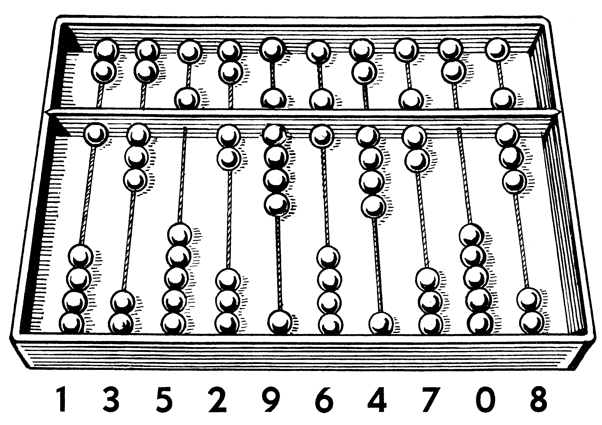

A hand-operated calculating tool consisting of a two-dimensional array of slidable items.
The English word "abacus" dates to a 14th century loanword borrowed from Latin describing a sandboard abacus. The Latin word comes from ancient Greek ἄβαξ (abax): a piece of rectangular material; something without a base. The Greek word may have been borrowed from Semitic languages (eg. Hebrew ābāq (אבק) - dust).
The first known abaci appeared in early 3rd millenium Mesopotamia, holding a table of columns delimiting successive orders of magnitude of Sumerian sexagesimal number system.
The device could have been spread to different regions under the Persian Empire, as the earliest evidence of it being in use elsewhere is dated to 5th century BC Greece at the earliest.
The Roman and Chinese abaci have used a bi-quinary coded decimal system - each column consisted of two smaller ones, with the top one having a singular bead representing five, and the bottom column having four bead representing one.
The Old-World abacus has spread to Japan and Korea in 14th century AD.
On the other side of the Atlantic Ocean, other hand calculated tools were invented, such as the Mesoamerican nepohualtzintzin and the Incan yupana.
Today, abacuses are still used in education, especially for vision-impaired students, for which it serves as a primary calculating tool throughout their lifes. Binary abaci are also used to visualise the calculating processes of computers.